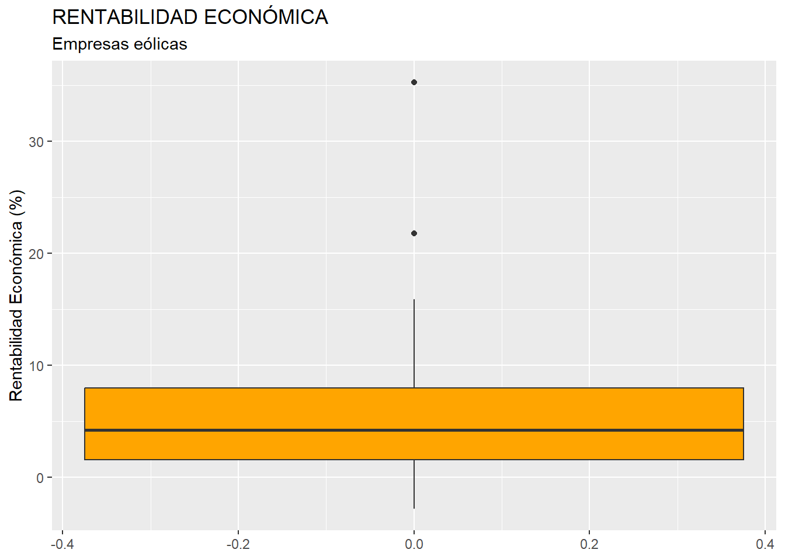

Capítulo 5 Análisis previo de datos.
5.1 Introducción.
Antes de la aplicación de técnicas complejas que permitan extraer de los datos conclusiones relevantes, es necesario realizar unas tareas previas destinadas a conseguir dos objetivos:
Preparar nuestros datos para que puedan ser procesados correctamente sin provocar distorsiones en los resultados.
Obtener una visión inicial de la información que esconden los datos, fundamentalmente en cuanto a las medidas básicas que caracterizan la distribución de frecuencias de las variables en las que se estructuran estos, así como, en el caso de contar con más de una variable, de las relaciones estadísticas que existen entre ellas.
Además, es preciso tener en cuenta que, usualmente, es conveniente que estos rasgos iniciales que caracterizan a nuestra muestra o población sean plasmados de un modo visualmente amigable, claro y conciso.
En esta práctica, por medio de un ejemplo basado en información económico-financiera de una muestra constituida por 100 empresas dedicadas a la producción de electricidad mediante tecnología eólica, se mostrarán una serie de buenas prácticas y análisis básicos útiles a la hora de preparar y analizar inicialmente nuestro conjunto de datos.
Vamos a suponer que trabajamos dentro de un proyecto que hemos creado previamente, de nombre “explora”. Dentro de la carpeta del proyecto guardaremos el script llamado “explora_describe.R”, y el archivo de Microsoft® Excel® llamado “eolica_100_mv.xlsx”. Si abrimos este último archivo, comprobaremos que se compone de tres hojas. La primera muestra un mensaje sobre el uso de los datos, la segunda recoge la descripción de las variables consideradas, y la tercera (hoja “Datos”) almacena los datos que debemos importar. Estos datos se corresponden con diferentes variables económico-financieras de las 100 empresas productoras de electricidad mediante generación eólica con mayor volumen de activo.
Es muy importante observar que existen variables con datos faltantes (missing values). En concreto, podemos identificar estas faltas de dato por la existencia de celdas en blanco; pero también por la existencia de celdas con el texto “n.d.” (no dato) o “s.d.” (sin dato). Es muy importante identificar el modo en que quedan recogidos los datos faltantes en la hoja de cálculo, ya que tendremos que aplicar código adicional en el comando de importación de R para que estos casos queden correctamente recogidos como NAs (not available).
Cerraremos el archivo de Microsoft® Excel®, “eolica_100_mv.xlsx” y volveremos a RStudio. Después, abriremos nuestro script “explora_describe.R” con File → Open File… Este script contiene el programa que vamos a ir ejecutando en la práctica.
La primera línea / instrucción en el script es:
La instrucción tiene como objeto limpiar el Environment (memoria) de objetos de anteriores sesiones de trabajo. Para importar los datos que hay en la hoja “Datos” del archivo de Microsoft® Excel® llamado “eolica_100_mv.xlsx”, ejecutaremos el código:
library(readxl)
eolica_100 <- read_excel("eolica_100_mv.xlsx", sheet = "Datos",
na = c("n.d.", "s.d."))
summary (eolica_100)## NOMBRE RES ACTIVO FPIOS
## Length:100 Min. : -5661.5 Min. : 24944 Min. : -77533
## Class :character 1st Qu.: 669.5 1st Qu.: 34547 1st Qu.: 2305
## Mode :character Median : 2084.5 Median : 46950 Median : 11936
## Mean : 11529.8 Mean : 277270 Mean : 123743
## 3rd Qu.: 3806.7 3rd Qu.: 85610 3rd Qu.: 28292
## Max. :727548.0 Max. :13492812 Max. :6904824
## NA's :1 NA's :1
##
## RENECO RENFIN LIQUIDEZ ENDEUDA
## Min. :-2.813 Min. :-359.773 Min. : 0.0140 Min. : 0.917
## 1st Qu.: 1.558 1st Qu.: 2.556 1st Qu.: 0.6567 1st Qu.: 50.852
## Median : 4.236 Median : 15.326 Median : 1.0650 Median : 83.346
## Mean : 5.416 Mean : 17.243 Mean : 2.7214 Mean : 72.227
## 3rd Qu.: 7.970 3rd Qu.: 31.307 3rd Qu.: 1.6078 3rd Qu.: 95.388
## Max. :35.262 Max. : 588.190 Max. :128.4330 Max. :140.745
## NA's :2 NA's :2
##
## MARGEN SOLVENCIA APALANCA MATRIZ
## Min. :-2248.157 Min. :-40.74 Min. :-8254.11 Length:100
## 1st Qu.: 12.316 1st Qu.: 4.71 1st Qu.: 16.13 Class :character
## Median : 26.618 Median : 16.65 Median : 161.97 Mode :character
## Mean : 3.228 Mean : 27.57 Mean : 345.03
## 3rd Qu.: 39.590 3rd Qu.: 45.59 3rd Qu.: 623.13
## Max. : 400.899 Max. : 99.08 Max. :12244.35
## NA's :2
##
## DIMENSION
## Length:100
## Class :character
## Mode :characterPor defecto, R considera las celdas en blanco de la hoja de cálculo como NAs; pero hemos de advertirle del resto de posibilidades que existen en la hoja para comunicar que falta un dato determinado, como ya se ha comentado. Para ello, hemos añadido en la función read_excel() el argumento na =, que recoge los contenidos de celda de la hoja de cálculo que indican que falta el dato en cuestión.
Por otro lado, R ha considerado la primera columna como una variable de tipo cualitativo, atributo, o factor. En realidad, esta columna no es una variable, sino que está formada por los nombres de los diferentes casos u observaciones. Para evitar que R tome la columna de los nombres de los casos como una variable más, podemos redefinir nuestro data frame diciéndole que tome esa primera columna como el conjunto de los nombres de los casos:
## RES ACTIVO FPIOS RENECO
## Min. : -5661.5 Min. : 24944 Min. : -77533 Min. :-2.813
## 1st Qu.: 669.5 1st Qu.: 34547 1st Qu.: 2305 1st Qu.: 1.558
## Median : 2084.5 Median : 46950 Median : 11936 Median : 4.236
## Mean : 11529.8 Mean : 277270 Mean : 123743 Mean : 5.416
## 3rd Qu.: 3806.7 3rd Qu.: 85610 3rd Qu.: 28292 3rd Qu.: 7.970
## Max. :727548.0 Max. :13492812 Max. :6904824 Max. :35.262
## NA's :1 NA's :1 NA's :2
##
## RENFIN LIQUIDEZ ENDEUDA MARGEN
## Min. :-359.773 Min. : 0.0140 Min. : 0.917 Min. :-2248.157
## 1st Qu.: 2.556 1st Qu.: 0.6567 1st Qu.: 50.852 1st Qu.: 12.316
## Median : 15.326 Median : 1.0650 Median : 83.346 Median : 26.618
## Mean : 17.243 Mean : 2.7214 Mean : 72.227 Mean : 3.228
## 3rd Qu.: 31.307 3rd Qu.: 1.6078 3rd Qu.: 95.388 3rd Qu.: 39.590
## Max. : 588.190 Max. :128.4330 Max. :140.745 Max. : 400.899
## NA's :2 NA's :2
##
## SOLVENCIA APALANCA MATRIZ DIMENSION
## Min. :-40.74 Min. :-8254.11 Length:100 Length:100
## 1st Qu.: 4.71 1st Qu.: 16.13 Class :character Class :character
## Median : 16.65 Median : 161.97 Mode :character Mode :character
## Mean : 27.57 Mean : 345.03
## 3rd Qu.: 45.59 3rd Qu.: 623.13
## Max. : 99.08 Max. :12244.35Observaremos que ya no aparece NOMBRE, puesto que la columna correspondiente ya no es considerada como una variable.
5.2 Análisis de una variable.
5.2.1 Buscando missing values y outliers.
Vamos a suponer que la variable que queremos estudiar es la variable Rentabilidad Económica (RENECO).
La primera acción que debe realizarse es comprobar que todos los casos (empresas) tienen su correspondiente dato o valor para la variable (RENECO), es decir, que no existen valores perdidos o missing values.
Para tener una idea general, se puede utilizar la función vis_miss() del paquete {visdat}, que nos localizará gráficamente los missing values de las diferentes variables, y calculará el porcentaje de casos que supone, con respecto al total de observaciones:
Puede observarse cómo, en el caso concreto de la variable RENECO, un 2% de los casos no tienen dato (es decir, 2 casos de los 100). Para localizar los casos concretos, puede recurrirse a utilizar las herramientas de manejo de data frames del paquete {dplyr}. En concreto, realizaremos una copia del data frame original, “eolica_100”, a la que llamaremos “muestra”, que es con la que trabajaremos (para mantener la integridad del data frame original); y filtraremos los casos para detectar aquellos que carecen de valor en la variable RENECO:
library (dplyr)
muestra<- select(eolica_100, everything())
muestra %>% filter(is.na(RENECO)) %>% select(RENECO)La función is.na() comprueba si, en la posición correspondiente a una fila o caso, para la variable escrita en el argumento; hay o no un dato o valor. Como resultado se obtienen dos empresas, para las que se puede comprobar que no hay valor para la variable RENECO:
## RENECO
## Viesgo Renovables SL. NA
## Sargon Energias SLU NAAnte la existencia de missing values, se puede actuar de varios modos. Por ejemplo, se puede intentar obtener por otro canal de información el conjunto de valores de RENECO que no están disponibles, o recurrir a alguna estimación para los mismos y asignarlos. En caso de que esto sea difícil, se puede optar, simplemente, por eliminar estos casos, en especial cuando representan un porcentaje muy reducido respecto al total de casos. En nuestro ejemplo, vamos a suponer que hemos optado por esta última vía, al no conseguir unos valores más o menos verosímiles de RENECO para las empresas de las que se carece de dato. Esta eliminación de casos se podrá realizar mediante el código:
El operador ! significa “no”.
Podemos comprobar cómo en el Global Environment aparece el data frame “muestra” con dos casos menos (98):

Una vez tratados los casos con valores perdidos o missing values, conviene detectar la posible presencia en la muestra de outliers o casos atípicos, que pudieran desvirtuar los resultados derivados de ciertos análisis. Al trabajar con una sola variable métrica (la rentabilidad económica, RENECO), podemos intentar realizar esta tarea representando gráficamente la variable mediante un boxplot o gráfico de caja. Aplicaremos, por ejemplo, el código siguiente, que utiliza la gramática del paquete {ggplot2}:
library (ggplot2)
ggplot(data = muestra, map = (aes(y = RENECO))) +
geom_boxplot(fill = "orange") +
ggtitle("RENTABILIDAD ECONÓMICA", subtitle = "Empresas eólicas") +
ylab("Rentabilidad Económica (%)")Obteniéndose el gráfico:

La “caja” contiene el 50% de los valores de la variable que toman los casos centrales (los que van del primer cuartil al tercero, cuya diferencia se llama rango intercuartílico), y contiene una línea horizontal que es la mediana (segundo cuartil). Por arriba sobresale un segmento que llega al mayor valor de la variable que toma algún caso y que no llega a ser atípico; y por debajo de la caja otro segmento que llega al menor valor de la variable que toma algún caso y que no llega a ser atípico. Los casos atípicos o outliers son aquellos que toman valores que se alejan más de 1.5 veces del rango intercuartílico (altura de la caja) del tercer cuartil, por arriba; o del primer cuartil, por abajo. Se registran mediante puntos.
En nuestro caso, el boxplot ratifica la existencia de dos casos atípicos. Para identificar esos dos casos concretos, podemos recurrir al paquete {dplyr}, y establecer un filtro con el siguiente código:
Q1 <- quantile (muestra$RENECO, c(0.25))
Q3 <- quantile (muestra$RENECO, c(0.75))
muestra %>%
filter(RENECO > Q3 + 1.5*IQR(RENECO) | RENECO < Q1 - 1.5*IQR(RENECO)) %>%
select(RENECO)En el código anterior, las dos primeras filas calculan los cuartiles primero (Q1) y tercero (Q3) mediante la función quantile(). En esta función, es preciso poner como segundo argumento la proporción de casos que van a quedar por debajo del “cuantil” en cuestión (por ejemplo, el primer cuartil se calcula poniendo 0.25, dado que deja por debajo al 25% de casos con menor valor en la variable). Luego se filtran los outliers mediante la función filter() de {dplyr} , calculados como aquellos casos con valores de RENECO mayores que Q3 más 1,5 veces el rango intercuartílico de la variable; o menores que Q1 menos 1,5 veces dicho rango intercuartílico. Para calcular el rango intercuartílico se recurre a la función IQR(). Finalmente, con select(), se muestran los casos en la consola de R-Studio:
## RENECO
## Molinos Del Ebro SA 35.262
## Sierra De Selva SL 21.761Como ocurría con los missing values, el tratamiento de los outliers depende de la información que se tenga, existiendo varias alternativas (corrección del dato, estimación, etc.) Si no se tiene información fiable, y los outliers no representan una gran proporción respecto al total de casos, puede optarse por su eliminación de la muestra. En este ejemplo, efectivamente, eliminaremos estas dos empresas con comportamiento atípico en la rentabilidad económica (RENECO), a fin de que su presencia en la muestra no distorsione los resultados en la aplicación posterior de ciertas técnicas (por ejemplo, un ANOVA o un análisis de regresión). Podemos hacerlo creando un nuevo data frame a partir de “muestra”; pero sin esos dos casos. Ese nuevo data frame se llamará, por ejemplo, “muestra_so”:
Es importante observar que, en el código de la función filter(), las desigualdades deben cambiar, así como el operador “|” por el operador “&”. En el Global Environment podemos comprobar cómo el data frame “muestra_so” posee el mismo número de variables que el data frame “muestra”; pero con dos observaciones o casos menos (96).
5.2.2 Descripción de una variable.
Una vez que se tiene preparada la base de datos, con un tratamiento adecuado de los missing values y de los outliers, y antes de proceder a la aplicación de una técnica adecuada según los objetivos perseguidos en el estudio; suelen presentarse una serie de gráficos básicos y medidas descriptivas que proporcionan una idea inicial de la estructura del sector para la variable o variables analizadas. Nos referimos a medidas y/o gráficos de posición, dispersión y forma (asimetría y curtosis).
Antes de ello, se puede presentar una tabla donde se recoja la distribución de frecuencias de la variable. Si son muchos los casos (en el ejemplo, 96), la distribución podría presentarse agrupada en intervalos, como ya se vio en el capítulo 4 de este libro. De este modo, el código para generar la tabla podría ser:
# Tabla de datos (distribución de frecuencias agrupadas en intervalos)
library (knitr)
library (kableExtra)
muestra_so <- muestra_so %>% arrange(RENECO, row.names(muestra_so))
# Crear los intervalos
muestra_so$intervalos <- cut(muestra_so$RENECO, breaks = 5, include.lowest = TRUE)
# Contar las frecuencias de cada intervalo
conteo_intervalos <- table(muestra_so$intervalos)
# Convertir el resultado a un data frame para una mejor visualización
conteo_intervalos_df <- as.data.frame(conteo_intervalos)
# Renombrar las columnas para mayor claridad
colnames(conteo_intervalos_df) <- c("Intervalo", "Frecuencia")
# Calcular y guardar la frecuencia total
N_agre <- sum(conteo_intervalos_df$Frecuencia)
# Calcular frecuencias absolutas acumuladas
conteo_intervalos_df$Frecuencia_acum <- cumsum(conteo_intervalos_df$Frecuencia)
# Calcular frecuencias relativas
conteo_intervalos_df$Frecuencia_R <- conteo_intervalos_df$Frecuencia / N_agre
# Calcular frecuencias relativas acumuladas
conteo_intervalos_df$Frecuencia_R_acum <- cumsum(conteo_intervalos_df$Frecuencia_R)
# Mostrar el resultado
conteo_intervalos_df %>%
kable(caption = "Distribución de frecuencias agrupadas en intervalos de la Rentabilidad Económica",
col.names = c("Intervalo rentabilidad", "Frecuencia absoluta n(i)",
"Frecuencia absoluta acum. N(i)", "Frecuencia relativa f(i)",
"Frecuencia relativa acum. F(i)"),
format.args = list(decimal.mark = ".", digits = 2)) %>%
kable_styling(full_width = F, bootstrap_options = "striped",
"bordered", "condensed",
position = "center", font_size = 11) %>%
row_spec(0, bold= T, align = "c") %>%
row_spec(1:(nrow(conteo_intervalos_df)), bold= F, align = "c")| Intervalo rentabilidad | Frecuencia absoluta n(i) | Frecuencia absoluta acum. N(i) | Frecuencia relativa f(i) | Frecuencia relativa acum. F(i) |
|---|---|---|---|---|
| [-2.83,0.926] | 16 | 16 | 0.17 | 0.17 |
| (0.926,4.66] | 38 | 54 | 0.40 | 0.56 |
| (4.66,8.4] | 21 | 75 | 0.22 | 0.78 |
| (8.4,12.1] | 11 | 86 | 0.11 | 0.90 |
| (12.1,15.9] | 10 | 96 | 0.10 | 1.00 |
El análisis gráfico suele dar una idea atractiva e intuitiva de la estructura de la distribución de frecuencias de nuestro conjunto de casos en relación con la variable a analizar. Un gráfico fundamental es el histograma de la variable estudiada. Para ello, utilizaremos la gramática del paquete {ggplot2}:
## Descriptivos básicos
# Gráficos básicos
g1 <-
ggplot(data = muestra_so, map = aes(x = RENECO)) +
geom_histogram(bins = 40,
colour = "red",
fill = "orange",
alpha = 0.7) +
geom_vline(xintercept = mean(muestra_so$RENECO),
color = "dark blue",
size = 1.2,
alpha = 0.8) +
ggtitle("Histograma")+
xlab("Rentabilidad Económica (%)") +
ylab("Frecuencias")
g1En el gráfico vemos de un modo bastante nítido la distribución de frecuencias en cuanto a la rentabilidad económica (RENECO). Se ha incorporado una línea vertical azul (mediante geom_vline()) para localizar la rentabilidad media. Entre otras cosas, se puede apreciar que la distribución de frecuencias es acampanada y asimétrica positiva.
Como complemento al histograma, podemos realizar un gráfico de densidad de RENECO, al que añadiremos una curva normal con la misma media y desviación típica que nuestra distribución de frecuencias, y que se añade mediante stat_function() y el argumento fun = dnorm. Este gráfico representa la distribución de probabilidad empírica de la muestra, es una especie de histograma “suavizado”. De este modo, se podrán verificar de un modo fácil algunas de las características avanzadas con la observación del histograma, como la asimetría positiva. El código es:
g2 <-
ggplot(data = muestra_so, map = aes(x = RENECO)) +
geom_density(colour = "red",
fill = "orange",
alpha = 0.7) +
geom_vline(xintercept = mean(muestra_so$RENECO),
color = "dark blue",
size = 0.8,
alpha = 0.8) +
stat_function(fun = dnorm, args = list(mean = mean(muestra_so$RENECO),
sd = sd(muestra_so$RENECO)),
geom = "area", color = "darkblue",
fill = "yellow", alpha = 0.2) +
ggtitle("Gráfico de densidad vs curva normal")+
xlab("Rentabilidad Económica (%)") +
ylab("Densidad")
g2Un tercer gráfico útil es el box-plot una vez se eliminaron los casos outliers, con la incorporación de los valores que toman los casos que componen la muestra, para lo cuál se utiliza el geom_jitter:
g3 <-
ggplot(data = muestra_so, map = (aes(x = "", y = RENECO))) +
geom_boxplot(color = "red",
fill = "orange",
outlier.shape = NA) +
stat_summary(fun = "mean",
geom = "point",
size = 3,
col = "darkblue") +
geom_jitter(width = 0.1,
size = 1,
col = "darkred",
alpha = 0.50) +
ggtitle("Box-Plot") +
ylab("Rentabilidad Económica (%)")
g3Por otro lado, conviene tener conocimiento del valor de las principales medidas descriptivas (de posición, dispersión, forma) que caracterizan a la distribución de la variable a analizar. Para ello, vamos a crear un data frame llamado, por ejemplo, “estadisticos”, que recogerá las diferentes medidas, calculadas al aplicar a la variable RENECO del data frame “muestra_so” la función de {deplyr} llamada summarise(). Se calcularán la media, desviación típica, valor mínimo, mediana, valor máximo, el coeficiente de asimetría de Fisher, y el coeficiente de apuntamiento o curtosis de Fisher. Precisamente, para poder calcular esta última medida, es preciso activar el paquete {moments}, que contiene la función kurtosis(). La versión del coeficiente de apuntamiento de esta función dispone como distribución perfectamente mesocúrtica el valor de 3, por lo que se le restará 3 en la versión que manejaremos para que la distribución mesocúrtica se sitúe en un coeficiente de 0. El código es:
# Calcular estadísticos
library (moments) # paquete necesario para calcular la curtosis.
estadisticos <- muestra_so %>% summarise( Media = mean(RENECO),
DT = sd(RENECO),
Mínimo = min(RENECO),
Mediana = median(RENECO),
Maximo = max(RENECO),
Asimetria = skewness(RENECO),
Curtosis = kurtosis(RENECO) - 3)La ventaja de volcar las medidas y estadísticos en el data frame (de un solo caso) “estadisticos” es que se pueden mostrar los valores en una tabla elegante generada a partir de el mismo mediante las funciones knitr() y kableExtra(), como ya sabemos:
# Mostrar estadisticos
estadisticos %>%
kable(caption = "Principales Estadísticos de la Rentabilidad Económica",
col.names = c("Media", "Mediana",
"Desviación Típica", "Valor mínimo",
"Valor Máximo", "C. Asimetría Fisher",
"C. Curtosis Fisher"),
format.args = list(decimal.mark = ".", digits = 2)) %>%
kable_styling(full_width = F, bootstrap_options = "striped",
"bordered", "condensed",
position = "center", font_size = 11) %>%
row_spec(0, bold= T, align = "c") %>%
row_spec(1:(nrow(estadisticos)), bold= F, align = "c")| Media | Mediana | Desviación Típica | Valor mínimo | Valor Máximo | C. Asimetría Fisher | C. Curtosis Fisher |
|---|---|---|---|---|---|---|
| 4.9 | 4.3 | -2.8 | 4.1 | 16 | 0.56 | -0.37 |
La interpretación de estas medidas fueron comentadas en el capítulo 4.
5.2.3 Normalidad.
En muchas técnicas multivariantes basadas en métodos inferenciales (por ejemplo, análisis de la varianza, o en la regresión lineal), se requiere que las variables sigan una distribución normal. Para comprobarlo, se puede a recurrir a análisis gráficos o a análisis formales, estos últimos basados en contrastar la hipótesis nula de normalidad.
Vamos a mostrar un método gráfico muy extendido. Comprobaremos la normalidad de la variable RENECO mediante un gráfico qq (cuantil-cuantil), que compara los cuantiles de nuestra muestra con los de una distribución normal teórica (con la misma media y desviación típica). Si los puntos se sitúan cercanos a la diagonal, entonces se asumirá un comportamiento (aproximadamente) normal. El código para realizar el gráfico con las herramientas del paquete {ggplot2} es:
## Normalidad
# Grafico QQ
g4 <-
ggplot(data = muestra_so, aes(sample = RENECO)) +
stat_qq(colour = "red") +
stat_qq_line(colour = "dark blue") +
ggtitle("QQ-Plot")
g4Y el resultado:
A veces, es difícil obtener una conclusión sólida con el gráfico qq; aunque en el ejemplo se aprecia, sobre todo en los primeros puntos, una separación notable de estos con respecto a la línea, lo que induce a pensar en que podría no seguirse una distribución normal.
Si queremos ser más precisos, en lugar de un análisis gráfico se puede recurrir a realizar un análisis formal, basado en la realización de contrastes de hipótesis. Una prueba muy usual es la prueba de normalidad de Shapiro y Wilk, que tiene un buen comportamiento en muestras relativamente reducidas. En esta prueba, la hipótesis nula equivale al supuesto de normalidad. Para un 5% de significación estadística, un p-valor superior a 0.05 implicará el no-rechazo de la hipótesis de normalidad. Para realizar la prueba, se ejecutará el código:
El resultado obtenido en la consola:
##
## Shapiro-Wilk normality test
##
## data: muestra_so$RENECO
## W = 0.9605, p-value = 0.005523Como el p-valor es (muy) inferior a 0.05, se rechaza la hipótesis nula de normalidad en la distribución, lo que implica que, para una significación estadística del 5%, admitimos que RENECO no sigue, para nuestra muestra, un comportamiento normal, como ya se anticipó con el gráfico qq.
5.2.4 Resumen: los 4 gráficos básicos en la descripción de una variable.
En definitiva, para describir de un modo inicial una distribución de frecuencias de una variable (en escala métrica), podrían analizarse los 4 gráficos que se han comentado anteriormente. Estos gráficos se pueden presentar conjuntamente, para ahorrar espacio en un informe, utilizando el paquete {patchwork}, que permite combinar e integrar en una sola imagen varios gráficos generados con {ggplot2}. En nuestro ejemplo, vamos a generar una figura que integra los 4 gráficos anteriores (que hemos denominado “g1”, “g2”, “g3” y “g4”). Para ello creamos el objeto “resumen”, que integra los gráficos, mediante una asignación con la sintaxis del paquete {patchwork}: El operador / indica que los gráficos siguientes se dispondrán inmediatamente debajo; mientras que | indica que el gráfico siguiente se dispone al lado del anterior. Luego, se le añade también un título y un subtítulo:
5.3 Análisis de múltiples variables.
Son muchas las técnicas aplicadas al análisis de datos económicos basadas en una distribución de frecuencias multivariante. En este apartado nos centraremos en el caso de variables métricas, ya que al caso de atributos, variables categóricas o factores; le dedicaremos un capítulo en exclusiva. Algunas técnicas multivariantes son el análisis de componentes principales, el análisis de regresión, el análisis clúster…
Todas estas metodologías requieren, de nuevo, de una fase inicial que ponga a punto la base de datos y ofrezca una fotografía de cómo es la situación en cuanto a las variables en estudio. En este sentido, es conveniente aplicar, para cada variable por separado, algunos de los análisis gráficos básicos vistos anteriormente.
A estos análisis básicos hay que añadir, principalmente, algún análisis previo adicional, destinado fundamentalmente a comprobar el grado de intensidad en la relación estadística entre las variables implicadas. Antes de abordar esta cuestión, hemos de pararnos en una casuística específica que se presenta cuando trabajamos con numerosas variables: la detección de casos atípicos o outliers.
5.3.1 Localización de missing values y outliers.
Para trabajar con múltiples variables, en primer lugar es preciso localizar los casos con valores perdidos o missing values, para decidir cómo procesarlos (eliminación del caso, estimación del valor faltante, etc.)
Vamos a imaginar que queremos realizar un análisis en el que tendremos en cuenta las variables RENECO (rentabilidad económica), ACTIVO (volumen de activos de la empresa), MARGEN (margen de beneficio) y RES (resultado del ejercicio).
Ya vimos cómo el siguiente código nos aporta gráficamente una idea de la posible existencia de valores faltantes:
## Trabajando con multiples variables.
# Localizando y descartando casos con missing values.
vis_miss(eolica_100)
Podemos apreciar cómo existen varios casos con missing values en las variables objeto de estudio.
Para localizar los missing values, podemos recurrir al siguiente código. En él, hacemos una copia del data frame original, “eolica_100”, para preservar su integridad. A esa copia la hemos llamado “muestra2”. Luego, hemos sometido a “muestra2” a un filtro para detectar los casos en los que no hay valor para alguna (o varias) de las variables analizadas. El operador | significa “o”. Posteriormente, hemos decidido eliminar esos casos. Para ello asignamos a “muestra2” el resultado de pasar un filtro en el que se eligen los casos que no tienen valores faltantes en ninguna de las variables. El operador & significa “y”:
## Trabajando con multiples variables.
# Localizando y descartando casos con missing values.
muestra2<- select(eolica_100, everything())
muestra2 %>% filter(is.na(RENECO) | is.na(ACTIVO) | is.na(MARGEN) | is.na(RES))%>%
select(RENECO, ACTIVO, MARGEN, RES)## RENECO ACTIVO MARGEN RES
## Viesgo Renovables SL. NA 269730.00 11.818 4609.000
## Biovent Energia SA 4.551 183899.00 22.792 NA
## Sargon Energias SLU NA 85745.00 -615.625 -2216.000
## Parc Eolic Sant Antoni SL 1.361 69654.00 NA 668.000
## Eolica La Brujula SA 7.295 42146.98 NA 2306.062
## La Caldera Energia Burgos SL 2.643 NA 14.448 511.304El data frame “muestra2” contiene los mismos datos que “eolica_100”, salvo los 6 casos con missing values (94).
Para la detección de outliers, si las variables que entran en el análisis son numerosas, podría ser poco operativo estudiar las variables una a una. Una alternativa consiste en calcular la distancia de Mahalanobis de las variables del estudio, como “resumen” del comportamiento de cada caso en todas las variables del análisis, consideradas conjuntamente.
Así, primero vamos a calcular una columna más en el data frame “muestra2” con los valores de la distancia de Mahalanobis del conjunto de las 4 variables en cada uno de los casos (empresas eólicas). Esta columna o variable la denominaremos, por ejemplo, MAHALANOBIS. Para ello, se utiliza la función mutate() del paquete {deplyr}, y como argumento de esta la función mahalanobis(), en la que hay que especificar:
Las columnas de “muestra2” para las que se van a calcular las distancias, unidas en una matriz interna con la función
cbind().El vector de medias de las variables para las que se calcula la distancia (argumento
center =). Las variables, aquí, se recogen con la funciónselect()de{deplyr}, en donde el punto significa que las columnas pertenecen al data frame al que se llamó con el operador pipe%>%:La matriz de varianzas y covarianzas de las variables para las que se calcula la distancia (argumento
cov =).
En definitiva, el código es:
# Identificando y descartando outliers con distancia de Mahalanobis.
muestra2 <- muestra2 %>%
mutate (MAHALANOBIS = mahalanobis(cbind(RENECO, ACTIVO, MARGEN, RES),
center = colMeans(select(., RENECO, ACTIVO, MARGEN, RES)),
cov = cov(select(., RENECO, ACTIVO, MARGEN, RES))))Posteriormente, se puede construir el diagrama de caja de la variable MAHALANOBIS, como cualquier otra variable:
ggplot(data = muestra2, map = (aes(y = MAHALANOBIS))) +
geom_boxplot(fill = "orange") +
ggtitle("DISTANCIA DE MAHALANOBIS",
subtitle = "RENECO, ACTIVO, MARGEN, RES. Empresas eólicas ") +
ylab("MAHALANOBIS")Se observa cómo existen varios casos outliers. Para saber de qué casos concretos se trata, se podrá ejecutar el código:
Q1M <- quantile (muestra2$MAHALANOBIS, c(0.25))
Q3M <- quantile (muestra2$MAHALANOBIS, c(0.75))
muestra2 %>%
filter(MAHALANOBIS > Q3M + 1.5*IQR(MAHALANOBIS) |
MAHALANOBIS < Q1M - 1.5*IQR(MAHALANOBIS))%>%
select(MAHALANOBIS, RENECO, ACTIVO, MARGEN, RES) En la consola se obtendrá el listado:
## MAHALANOBIS RENECO ACTIVO
## Holding De Negocios De GAS SL. 91.041690 5.264 13492812.00
## Global Power Generation SA. 37.255573 1.393 2002458.00
## Naturgy Renovables SLU 31.675561 1.959 1956869.00
## Saeta Yield SA. 11.891027 0.360 796886.38
## Molinos Del Ebro SA 29.589696 35.262 62114.37
## Tarraco Eolica SA 3.600426 12.868 38102.00
## WPD Parque Eolico Navillas SL. 84.589929 -0.416 35511.45
## Brulles Eolica SL 3.599069 15.882 29722.58
## Sierra De Selva SL 9.055155 21.761 27728.00
##
## MARGEN RES
## Holding De Negocios De GAS SL. 91.152 727548.0000
## Global Power Generation SA. 22.403 39995.0000
## Naturgy Renovables SLU 20.442 42737.0000
## Saeta Yield SA. 16.258 2084.4760
## Molinos Del Ebro SA 41.821 17026.2569
## Tarraco Eolica SA 400.899 4953.0000
## WPD Parque Eolico Navillas SL. -2248.157 -110.9293
## Brulles Eolica SL 47.227 3540.5693
## Sierra De Selva SL 47.045 4525.0000Si se opta por eliminar estos casos cara al análisis a aplicar posteriormente, se podrá crear un nuevo data frame, por ejemplo “muestra2_so”, con el código siguiente:
muestra2_so <- muestra2 %>%
filter(MAHALANOBIS <= Q3M + 1.5*IQR(MAHALANOBIS) &
MAHALANOBIS >= Q1M - 1.5*IQR(MAHALANOBIS)) El data frame “muestra2_so” será una réplica de “muestra2”, aunque sin incluir los casos detectados como atípicos o outliers (85 casos).
5.3.2 Correlación entre variables.
Cuando trabajamos con más de una variable, una característica muy importante viene dada por la intensidad con la que tales variables están relacionadas estadísticamente entre sí, es decir, el estudio de las correlaciones. Un modo atractivo y rápido de visualizar la matriz de correlaciones de las variables es a través de la función ggpairs() del paquete {GGally}. Para aplicar la función, hemos creado el data frame “temporal” con las variables (métricas) del estudio, que borramos tras general el gráfico:
## Correlaciones entre variables.
library (GGally)
temporal <- muestra2_so %>% select(RENECO, ACTIVO, MARGEN, RES)
corr_plot_so <- ggpairs(temporal,
lower = list(continuous = wrap("cor",
size = 4.5,
method = "pearson",
stars = TRUE)),
title = "Matriz de Correlación sin outliers")
rm(temporal)
corr_plot_so
Un coeficiente de correlación puede tomar un valor entre -1 (fuerte relación, en sentido opuesto) a +1 (fuerte relación, en el mismo sentido). Como puede apreciarse en el gráfico, las variables ACTIVO y RES mantienen una relación muy intensa y en sentido positivo. Entre MARGEN y RENECO existe también una relación de intensidad destacable. En cambio, ACTIVO y MARGEN; y RENECO y ACTIVO apenas están estadísticamente relacionadas.
Antes de terminar la práctica, vamos a comparar las correlaciones anteriores con las que se dan si se incluyen los casos outliers en la muestra. Estas correlaciones se generarán con el mismo código; pero sustituyendo el data frame “muestra2_so” por “muestra”:
temporal <- muestra2 %>% select(RENECO, ACTIVO, MARGEN, RES)
corr_plot_co <- ggpairs(temporal,
lower = list(continuous = wrap("cor",
size = 4.5,
method = "pearson",
stars = TRUE)),
title = "Matriz de Correlación con outliers")
rm(temporal)
corr_plot_coPuede observarse cómo la presencia de outliers puede variar la relación entre las variables. Salvo el caso de la correlación entre ACTIVO y RES, que se fortalece; las correlaciones entre RENECO y MARGEN, y RENECO y RES se debilitan (en este último caso, pasa a no ser significativa ni tan siquiera para una significación de 0.1).
Un modo visual para poder comparar ambas figuras consiste en utilizar la función ggmatrix_gtable() del paquete {GGally} para realizar “copias” en formato compatible con la función ggplot() del paquete {ggplo2}. Estas “copias” pueden integrarse en una sola figura utilizando la función grid.arrange() del paquete {gridExtra}. Nota: este paquete funciona de modo parecido a {patchwork}, y lo utilizamos porque este último paquete no funciona correctamente al intentar combinar las copias creadas en formato compatible con la función ggplot(). El código y resultado serán:
5.4 Materiales para realizar las prácticas del capítulo.
En esta sección se muestran los links de acceso a los diferentes materiales (scripts, datos…) necesarios para llevar a cabo los contenidos prácticos del capítulo.
Datos (en formato Microsoft (R) Excel (R)):
- eolica_100_mv.xlsx (obtener aquí)
Scripts:
- explora_describe.R (obtener aquí)